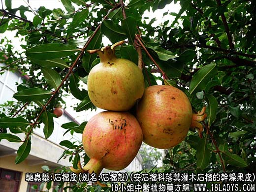
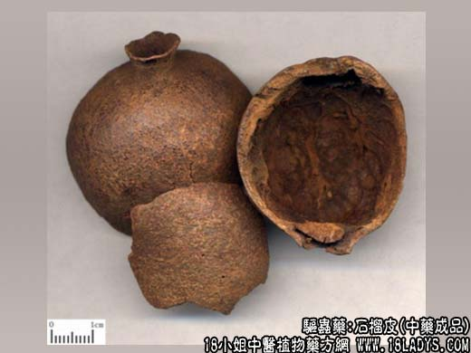
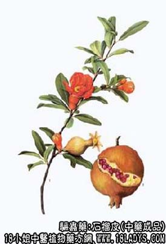

石榴皮为常用中药。始载《名医别录》，列为下品，原名安石榴。
别名：石榴壳、酸石榴皮、酸榴皮、西榴皮、安石榴酸实壳。
来源：为安石榴科植物落叶灌木或小乔木石榴的干燥果皮。多为栽培。
产地：主产于安徽、河南、山东等地，全国大部分地区均有生产。
性状鉴别：果皮呈瓢形或不规则的块状，大小不一，厚2~3毫米。外表面暗红色或棕黄色，粗糙，有麻点。顶端的片块上有筒状突起的残存宿萼，基部有柄痕或偶带短果柄。内面呈黄色或红棕色，有隔膜及种子脱落后的凹坑，形成隆起的网状纹理。质硬而脆，断面鲜黄色。气无，味苦涩。
以个大，皮厚，棕黄色，整洁者为佳。
主要成分：含鞣质、粘液质，苦味质。
药用价值：涩肠。其作用主要为收敛、抗菌。体外试验对绿脓杆菌、弗氏痢疾杆菌、伤寒杆菌有抗菌作用，对多种皮肤真菌也有不同程度的抑制作用。还有抗流感病毒作用。
炮制：生用。
性味：酸、涩，温。
归经：入大肠、肺、肾经。
功能：久泻久痢，便血，脱肛，遗精，白带，虫积腹痛。
临床应用：主要用于止泻，对久痢、虚泻、水泻都可用。现代观察治疗细菌性痢疾效果较好。一般单用即可。多用粉剂，也可用煎剂。
用量：入煎剂9~15g。大剂用至30g，研未冲服每次6g。
处方举例：石榴皮4只，煅黄研末，每早晨服6g，白开水送下，治久泻。
注：石榴根皮，为石榴根部的干燥皮，有人简称为石榴皮（注意与石榴果皮不同）含挥发性生物硷，即石榴皮硷。又含较多量(25%)的鞣花丹宁酸，有驱绦虫作用，可用石榴根皮煎剂（石榴根皮25克，加水300毫升，煎至100毫升服下）注意：石榴根皮煎剂对胃粘膜有刺激性，有胃炎者慎用。